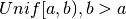

Module implementing MCMC samplers
- Metropolis: Adaptive Metropolis Hastings sampler
- Dream: DiffeRential Evolution Adaptive Markov chain sampler
DiffeRential Evolution Adaptive Markov chain sampler
Generates a second proposal based on rejected proposal xi
Does the actual sampling loop.
Standard random-walk Metropolis Hastings sampler class
Does the actual sampling loop.
Does a single run of self.model and returns the results as a record array
Draw samples from a multinomial distribution.
The multinomial distribution is a multivariate generalisation of the binomial distribution. Take an experiment with one of p possible outcomes. An example of such an experiment is throwing a dice, where the outcome can be 1 through 6. Each sample drawn from the distribution represents n such experiments. Its values, X_i = [X_0, X_1, ..., X_p], represent the number of times the outcome was i.
Throw a dice 20 times:
>>> np.random.multinomial(20, [1/6.]*6, size=1)
array([[4, 1, 7, 5, 2, 1]])
It landed 4 times on 1, once on 2, etc.
Now, throw the dice 20 times, and 20 times again:
>>> np.random.multinomial(20, [1/6.]*6, size=2)
array([[3, 4, 3, 3, 4, 3],
[2, 4, 3, 4, 0, 7]])
For the first run, we threw 3 times 1, 4 times 2, etc. For the second, we threw 2 times 1, 4 times 2, etc.
A loaded dice is more likely to land on number 6:
>>> np.random.multinomial(100, [1/7.]*5)
array([13, 16, 13, 16, 42])
Draw random samples from a multivariate normal distribution.
The multivariate normal, multinormal or Gaussian distribution is a generalization of the one-dimensional normal distribution to higher dimensions. Such a distribution is specified by its mean and covariance matrix. These parameters are analogous to the mean (average or “center”) and variance (standard deviation, or “width,” squared) of the one-dimensional normal distribution.
The drawn samples, of shape size, if that was provided. If not, the shape is (N,).
In other words, each entry out[i,j,...,:] is an N-dimensional value drawn from the distribution.
The mean is a coordinate in N-dimensional space, which represents the location where samples are most likely to be generated. This is analogous to the peak of the bell curve for the one-dimensional or univariate normal distribution.
Covariance indicates the level to which two variables vary together.
From the multivariate normal distribution, we draw N-dimensional
samples, ![X = [x_1, x_2, ... x_N]](_images/math/75799fb61cb7e0225f1a28c263b0199be87a2c9c.png) . The covariance matrix
element
. The covariance matrix
element  is
the covariance of
is
the covariance of  and
and  .
The element
.
The element  is the variance of (i.e. its
“spread”).
is the variance of (i.e. its
“spread”).
Instead of specifying the full covariance matrix, popular approximations include:
- Spherical covariance (cov is a multiple of the identity matrix)
- Diagonal covariance (cov has non-negative elements, and only on the diagonal)
This geometrical property can be seen in two dimensions by plotting generated data-points:
>>> mean = [0,0]
>>> cov = [[1,0],[0,100]] # diagonal covariance, points lie on x or y-axis
>>> import matplotlib.pyplot as plt
>>> x,y = np.random.multivariate_normal(mean,cov,5000).T
>>> plt.plot(x,y,'x'); plt.axis('equal'); plt.show()
Note that the covariance matrix must be non-negative definite.
Papoulis, A., Probability, Random Variables, and Stochastic Processes, 3rd ed., New York: McGraw-Hill, 1991.
Duda, R. O., Hart, P. E., and Stork, D. G., Pattern Classification, 2nd ed., New York: Wiley, 2001.
>>> mean = (1,2)
>>> cov = [[1,0],[1,0]]
>>> x = np.random.multivariate_normal(mean,cov,(3,3))
>>> x.shape
(3, 3, 2)
The following is probably true, given that 0.6 is roughly twice the standard deviation:
>>> print list( (x[0,0,:] - mean) < 0.6 )
[True, True]
Random values in a given shape.
Create an array of the given shape and propagate it with random samples from a uniform distribution over [0, 1).
random
This is a convenience function. If you want an interface that takes a shape-tuple as the first argument, refer to np.random.random_sample .
>>> np.random.rand(3,2)
array([[ 0.14022471, 0.96360618], #random
[ 0.37601032, 0.25528411], #random
[ 0.49313049, 0.94909878]]) #random
random_sample(size=None)
Return random floats in the half-open interval [0.0, 1.0).
Results are from the “continuous uniform” distribution over the stated interval. To sample  multiply the output of random_sample by (b-a) and add a:
(b - a) * random_sample() + a
>>> np.random.random_sample()
0.47108547995356098
>>> type(np.random.random_sample())
<type 'float'>
>>> np.random.random_sample((5,))
array([ 0.30220482, 0.86820401, 0.1654503 , 0.11659149, 0.54323428])
Three-by-two array of random numbers from [-5, 0):
>>> 5 * np.random.random_sample((3, 2)) - 5
array([[-3.99149989, -0.52338984],
[-2.99091858, -0.79479508],
[-1.23204345, -1.75224494]])
Decorator to time methods